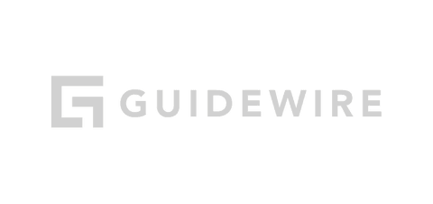
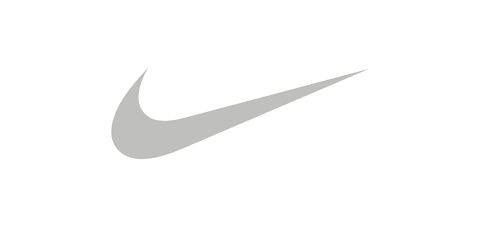

Approved. Thank you!
Studio Rendezvous, Inc. B2B design and motion studio
Design and motion, always on.
When you need a team that delivers every day.
At Studio Rendezvous, senior designers and motion artists work right alongside your marketing and design teams. Drop a job on the board and we get straight to work, on brand and on deadline, from a single job to big campaigns and a whole year of marketing goals.
Senior teamBuilt for tight deadlinesCurrent clients average 9 years
Clients we’re helping every month

Put a job on the board. We’ve got it.
Every client gets a shared monday.com board, free to join. It’s where jobs come in, where reviews happen and where nothing gets lost in an inbox. Already have your own board, Figma libraries and review process? We work in yours. Tight deadline? We plan for it, and when something truly can’t wait, we make room.
Your job, start to finish
“Every job gets my eyes the moment it lands. I assign it to the right senior creative and let the client know we’re on it.”
“I have no idea how many clients they have, but it doesn’t matter because we always feel like we are important and their only focus. They are always extremely responsive to our needs and frequently go out of their way to accommodate tight deadlines.”
Clients stay for years.
Second nature
After hundreds of projects, we know your brand the way your own team does. Many clients now work from brand books and templates we built.
It compounds
Years of source files and past projects mean every new job starts ahead. The longer we work together, the faster it goes.
Straight to work
Every job is assigned and prioritized as it lands, so even tight deadlines get senior attention, not shortcuts.
“I have worked with Studio Rendezvous while at four companies over seven years. It’s their collaborative nature that makes them stand out from other agencies.”
What marketing teams ask us for.
Everything a B2B marketing team ships, from a banner to a booth, made by the same senior team.
- Digital
Web and email
Web pages and full websites, landing pages, banners and email templates.
- Print
Collateral
Brochures, one-pagers, catalogs, direct mail and signage.
- Events
Trade shows and stages
Booths, stage graphics and loops, badges, wayfinding and event apps.
- Video
Motion and video
Explainers, motion graphics, product and training videos, campaign and social video, and trade show booth loops, finished with professional voiceover, music and sound.
- Social
Social programs
Static and animated posts, campaign kits and monthly programs.
- UX
UX and interactive
UX for companies with large websites. We design and build out their pages in Figma, plus product UI, prototypes and design systems.
- Brand
Brand systems
Brand books, logo families, templates and shared asset libraries.
- Sales
Decks and proposals
Pitch decks, proposals and partner playbooks your sales team can edit.
- Apparel
Apparel and textiles
Socks, hats, jackets and shirts, designed in-house for kickoffs and events.
How we work together.
Try us first
A job or two at our hourly rate, with an estimate before we start.
Details
We start from your guidelines and past work, and, where you want it, help sharpen them as we go. Most retainer clients began this way.
Annual retainer
A team you can count on all year.
- A set block of hours each month at our best rate
- Unused hours roll over and stay yours until they’re used
Details
Your year is already on the calendar, so we commit to it. Invoiced at the start of the month. Hours and rates are reviewed each year.
Hourly
Room to flex when needs swing month to month.
Details
Invoiced at month end for the hours used.
15 years together · 10,000+ deliverables
Need content and strategy too?
Many of our clients do. For 15 years we’ve worked as one team with Content Matterz, a B2B content marketing agency. They bring the strategy, research and writing, plus fractional content leadership. We bring the design and motion. One brief, one board, one team.
Visit Content MatterzWhy Studio Rendezvous?
Instead of a freelancer
A full senior team across design, motion, UX, print and apparel, with someone ready for every job.
Instead of a new hire
No ramp-up. We start on the first job and flex with your month, with no payroll when it slows.
Instead of a big agency
Direct access. No account managers or junior pool, and even our creative director designs, with 30 years in the business.
Alongside your team
More hands, same brand. We step into your process, take the overflow and the deadline crunch, and help the brand look its best along the way.
Good to know
TimingHow fast?
We work to your timelines, and we’re fast. Bigger pieces like video with voiceover or storyboards get planned with you up front.
OnboardingGetting started
We get right to work on your highest priorities, then schedule everything else around your calendar. Once the schedule is locked, we move.
TrustWho sees your work
Every job, released or not, is done by our senior team, never outside freelancers. Launches and unreleased products are seen only by the people on your jobs. Send us your vendor security review and we’ll complete it before the first job.
TrustCompliance review
Legal and compliance rounds are expected and built into the schedule from day one.
TrustBusy months
When your month spikes, the whole team picks it up. Share your launch calendar and we plan around it.
The people on your board.
Every client gets the whole team. Have your own creative director? We work to their direction.
Shane French
Creative Director, Design, UX and Motion
Tom Larsen
Senior Designer
Andrew Baldwin
Senior UX/UI Designer
Joel Bender
Senior Designer
Gui Freitas
Senior Motion Designer
“When that call comes in from Apple, asking for artwork for a product feature by the end of the week, it is incredibly reassuring to know there is someone we can call who is intimately familiar with the product.”
Past clients · thousands of projects over the years

Start now with one job.
See how easy it is. Ask for an estimate, get more information, or put a first job on the board. Getting started takes one meeting: share your brand book, recent work and a few examples of the brand done right, and we hit the ground running.
Prefer email? hello@studiorendezvous.net